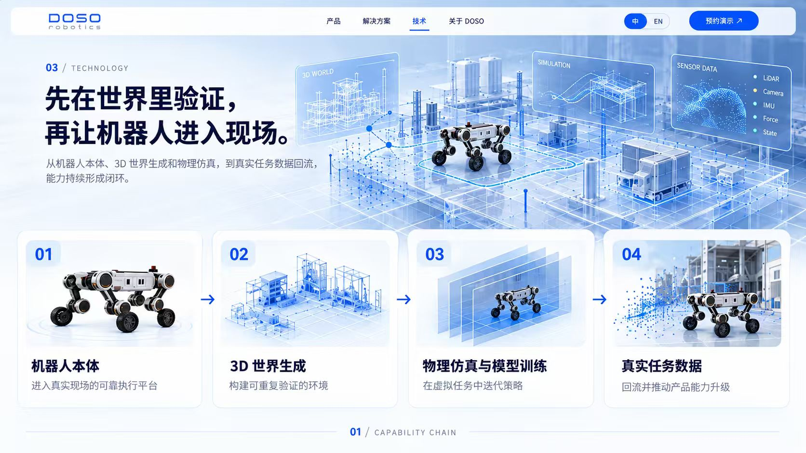

Mechanics & electronics
Mechanical structures, joint drives, power systems and communication buses.
ABOUT / DOSO ROBOTICS
We develop quadruped robots and intelligent system solutions. Our integrated platform connects robot hardware and open development with deployment in inspection, emergency operations, research and education.
We envision intelligent robots that understand tasks, adapt to their environments and act autonomously across every industry and scenario.Our vision
01 / FULL-STACK ENGINEERING
Mechanical, electronic, motion-control, perception and software development work together to support iteration and repeatable deployments.
Mechanical structures, joint drives, power systems and communication buses.
Gait control, posture stability, state estimation and terrain adaptation.
Vision, sensor fusion, obstacle recognition and environment understanding.
ROS, SDKs, APIs, simulation platforms and data interfaces.
02 / LEARNING FROM THE FIELD
Bring a range of robot platforms to research, inspection, site security and complex terrain to execute real tasks.
Connect edge compute, real-robot data and model iteration so field feedback improves capability.
Build task data and domain knowledge into industry products that can be deployed, refined and replicated.
Field data → Model improvement → Hardware upgrades → Wider deployment
03 / FROM PRODUCT TO DELIVERY
Design inspection solutions for factories, campuses, warehouses and mining sites around task templates, remote operations and data records, with fleet coordination as a development direction.
Explore application solutions
OUR VISION
Bring intelligent robots into the real-world settings of every industry.
Prepare a brief